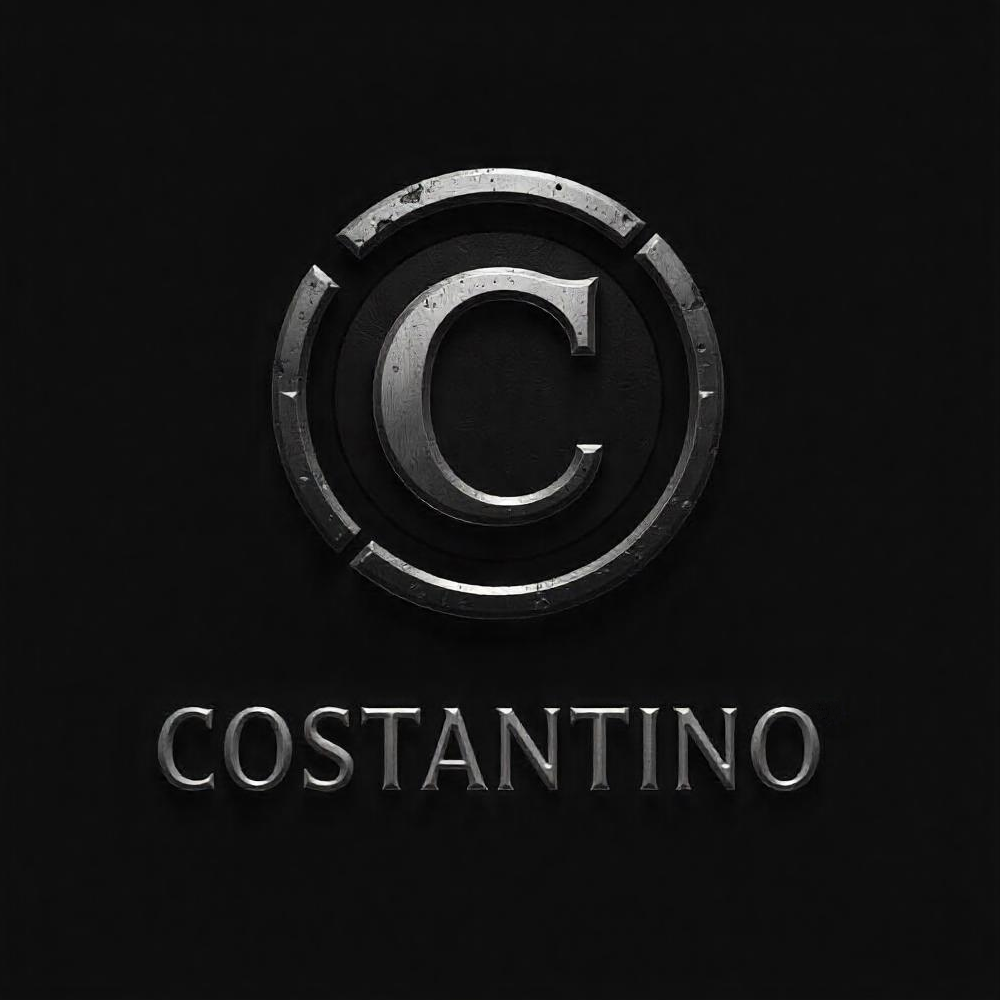

Profesional con formación y experiencia en software development.
Como Full stack developer, cuento con especialización en el backend y sólidos conocimientos en el frontend.
Además, tengo 15 años de experiencia en la industria química, en las áreas de control de calidad y desarrollo. Gracias a ello, tengo la capacidad de investigar en profundidad y resolver problemas de forma autónoma, así como la habilidad de adaptarme a distintos equipos y metodologías de trabajo.
Con un enfoque metódico y orientado a resultados, sé que puedo enfrentarme a desafíos complejos con eficacia. Mi pasión por los retos me impulsa a buscar proyectos que fomenten mi aprendizaje y crecimiento profesional.
VASS Oct 2023 – Jun 2024
Desarrollador Java enfocado en la plataforma Magnolia. Desarrollé plantillas y componentes personalizados utilizando, además de Java, herramientas como FreeMarker, YAML, HTML y JavaScript. Utilicé SQL para crear consultas optimizadas que aseguraran un acceso eficiente a los datos y un buen rendimiento del sistema.
Como entorno de desarrollo, utilicé Eclipse y Visual Studio Code, junto con Maven para la gestión de dependencias, Apache para facilitar la implementación de los proyectos y GitLab para el control de versiones.
Mi trabajo también incluyó la integración de sistemas externos que optimizaron la funcionalidad de la plataforma, y de la migración de contenido desde otras plataformas, con enfoque en asegurar la integridad de los datos.
Participé en la detección y resolución de fallos con pruebas de calidad para garantizar un rendimiento óptimo.